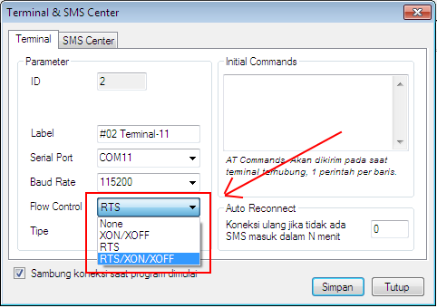

Flow Control (3.6.7)
Menu Flow Control (di Terminal -> Klik kanan -> Setting -> Flow Control) pada
versi 3.6.7 terdapat sedikit perubahan dari versi terdahulunya seperti ditunjukkan gambar di bawah ini:

Terdapat pilihan diantaranya:
- None, untuk hardware seperti Handphone Siemens C55, M55.
- XON/XOFF, untuk hardware yang menjalankan AT&K4 Command.
- RTS, untuk hardware yang menjalankan AT&K3 Command, seperti Modem Wavecome Single, Modem Pool Wavecome, Modem Stik.
- RTS/XON/XOFF, untuk hardware yang menjalankan AT&K4 Command dan AT&K3 Command.
Catatan: Bila Anda tidak mengetahui Command apa yang dijalankan oleh Hardware yang Anda miliki cobalah pilihan Flow Control satu per satu sampai icon terminal berwarna biru.